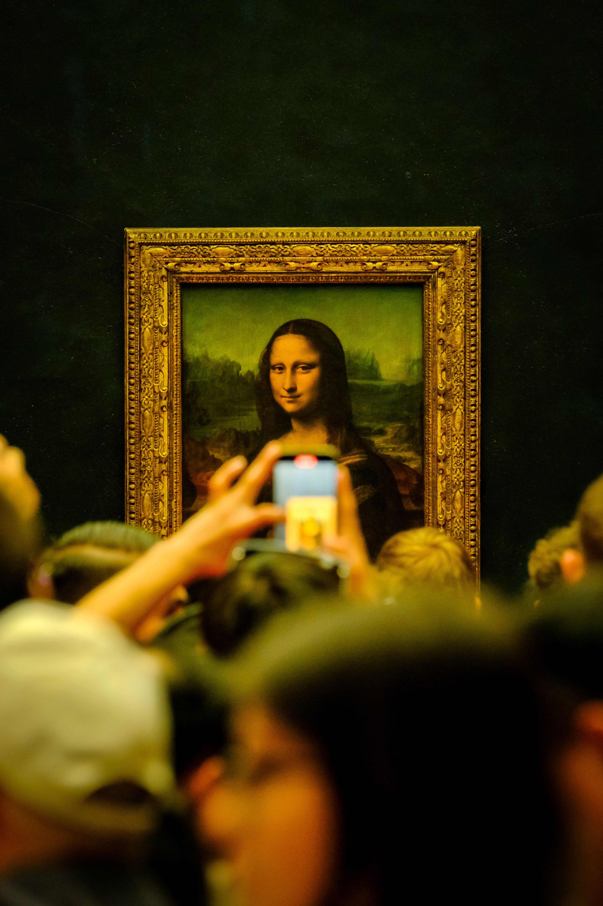

France is home to some of the most famous landmarks in the world. In Paris alone, you can stand under a giant iron tower, walk through a huge stone arch built for Napoleon, and see the world's most famous painting, all in one trip.
The Eiffel Tower
The Eiffel Tower was built by Gustave Eiffel's company for the World's Fair in 1889. At first, many people in Paris hated it, and a group of artists even signed a protest against it. It was only meant to stand for 20 years, but today it is the symbol of France. The tower is about 330 metres tall and can grow around 15 cm in summer, because the iron expands in the heat. It is repainted by hand every 7 years. At night, it sparkles with thousands of lights for five minutes every hour.
The Arc de Triomphe stands at the top of the Champs-Élysées, Paris's most famous avenue. Napoleon ordered it to be built in 1806 to honour the French army, but he died before it was finished in 1836. The names of French generals and battles are carved into its walls. Twelve avenues meet at the busy roundabout around it, so visitors reach it through an underground tunnel. Beneath the arch lies the Tomb of the Unknown Soldier, where a flame is relit every evening. You can climb 284 steps to the top for a great view of the city.
The Louvre is the largest art museum in the world and one of the most visited, with millions of people coming every year. It was once a royal palace before it opened as a museum in 1793. Its famous glass pyramid entrance was added in 1989. The museum is so big that it would take months to see every piece of art, so it is best to plan what you want to see first.

The Mona Lisa by Leonardo da Vinci, inside the Louvre
The Louvre's most famous painting is the Mona Lisa by Leonardo da Vinci. Many visitors are surprised by how small it is, only about 77 by 53 centimetres. In 1911 it was stolen from the museum and was missing for two years before it was found. Today it is kept behind bulletproof glass.